<!DOCTYPE html PUBLIC "-//W3C//DTD XHTML 1.0 Transitional//EN"
  "http://www.w3.org/TR/xhtml1/DTD/xhtml1-transitional.dtd">


<html xmlns="http://www.w3.org/1999/xhtml">
  <head>
    <meta http-equiv="Content-Type" content="text/html; charset=utf-8" />
    
  
    <title>1.7. 高斯过程(Gaussian Processes) &#8212; scikit-learn 0.18.1 documentation</title>
  <!-- htmltitle is before nature.css - we use this hack to load bootstrap first -->
  <meta name="viewport" content="width=device-width, initial-scale=1.0" />
  <link rel="stylesheet" href="../_static/css/bootstrap.min.css" media="screen" />
  <link rel="stylesheet" href="../_static/css/bootstrap-responsive.css"/>

    
    <link rel="stylesheet" href="../_static/nature.css" type="text/css" />
    <link rel="stylesheet" href="../_static/pygments.css" type="text/css" />
    <link rel="stylesheet" href="../_static/gallery.css" type="text/css" />
    
    <script type="text/javascript">
      var DOCUMENTATION_OPTIONS = {
        URL_ROOT:    '../',
        VERSION:     '0.18.1',
        COLLAPSE_INDEX: false,
        FILE_SUFFIX: '.html',
        HAS_SOURCE:  true
      };
    </script>
    <script type="text/javascript" src="../_static/jquery.js"></script>
    <script type="text/javascript" src="../_static/underscore.js"></script>
    <script type="text/javascript" src="../_static/doctools.js"></script>
    <script type="text/javascript" src="../_static/js/copybutton.js"></script>
    <link rel="shortcut icon" href="../_static/favicon.ico"/>
    <link rel="author" title="About these documents" href="../about.html" />
    <link rel="search" title="Search" href="../search.html" />
    <link rel="top" title="scikit-learn 0.18.1 documentation" href="../index.html" />
    <link rel="up" title="1. Supervised learning" href="../supervised_learning.html" />
    <link rel="next" title="1.8. Cross decomposition" href="cross_decomposition.html" />
    <link rel="prev" title="1.6. 最邻近法" href="neighbors.html" />
  
  
  <meta name="viewport" content="width=device-width, initial-scale=1.0" />
  <script src="../_static/js/bootstrap.min.js" type="text/javascript"></script>
  <link rel="canonical" href="http://scikit-learn.org/stable/modules/gaussian_process.html" />

  <script type="text/javascript">
    $("div.buttonNext, div.buttonPrevious").hover(
       function () {
           $(this).css('background-color', '#FF9C34');
       },
       function () {
           $(this).css('background-color', '#A7D6E2');
       }
    );
  </script>

  </head>
  <body role="document">

<div class="header-wrapper">
    <div class="header">
        <p class="logo"><a href="../index.html">
            
        </a>
        </p><div class="navbar">
            <ul>
                <li><a href="../index.html">主页</a></li>
                <li><a href="../install.html">安装</a></li>
                <li class="btn-li"><div class="btn-group">
              <a href="../documentation.html">文档</a>
              <a class="btn dropdown-toggle" data-toggle="dropdown">
                 <span class="caret"></span>
              </a>
              <ul class="dropdown-menu">
            <li class="link-title">Scikit-learn 0.17 (stable)</li>
            <li><a href="../tutorial/index.html">入门指南</a></li>
            <li><a href="../user_guide.html">使用手册</a></li>
            <li><a href="classes.html">API</a></li>
            <li><a href="../faq.html">FAQ</a></li>
            <li><a href="../developers.html">贡献</a></li>
            <li class="divider"></li>
                <li><a href="http://scikit-learn.org/dev/documentation.html">Scikit-learn 0.18 (development)</a></li>
                <li><a href="http://scikit-learn.org/0.16/documentation.html">Scikit-learn 0.16</a></li>
				<li><a href="../_downloads/user_guide.pdf">PDF 文档</a></li>
              </ul>
            </div>
        </li>
            <li><a href="../auto_examples/index.html">例子</a></li>
            </ul>

            <div class="search_form">
                <div id="cse" style="width: 100%;"></div>
            </div>
        </div> <!-- end navbar --></div>
</div>


<!-- Github "fork me" ribbon -->
<a href="https://github.com/lzjqsdd/scikit-learn-doc-cn">
  
</a>

<div class="content-wrapper">
    <div class="sphinxsidebar">
    <div class="sphinxsidebarwrapper">
        <div class="rel">
    

  <!-- rellinks[1:] is an ugly hack to avoid link to module
  index -->
        <div class="rellink">
        <a href="neighbors.html"
        accesskey="P">Previous
        <br/>
        <span class="smallrellink">
        1.6. 最邻近法
        </span>
            <span class="hiddenrellink">
            1.6. 最邻近法
            </span>
        </a>
        </div>

    <!-- Ad a link to the 'up' page -->
        <div class="spacer">
        &nbsp;
        </div>
        <div class="rellink">
        <a href="../supervised_learning.html">
        Up
        <br/>
        <span class="smallrellink">
        1. Supervised...
        </span>
            <span class="hiddenrellink">
            1. Supervised learning
            </span>
            
        </a>
        </div>
    </div>
    
      <p class="doc-version">This documentation is for scikit-learn <strong>version 0.18.1</strong> &mdash; <a href="http://scikit-learn.org/stable/support.html#documentation-resources">Other versions</a></p>
    <p class="citing">If you use the software, please consider <a href="../about.html#citing-scikit-learn">citing scikit-learn</a>.</p>
    <ul>
<li><a class="reference internal" href="#">1.7. 高斯过程(Gaussian Processes)</a><ul>
<li><a class="reference internal" href="#examples">1.7.1. Examples</a><ul>
<li><a class="reference internal" href="#id1">1.7.1.1. 用一个回归样例来开场</a></li>
<li><a class="reference internal" href="#id2">1.7.1.2. 拟合噪声数据</a></li>
</ul>
</li>
<li><a class="reference internal" href="#id3">1.7.2. 数学 公式</a><ul>
<li><a class="reference internal" href="#id4">1.7.2.1. 初始假设</a></li>
<li><a class="reference internal" href="#blup-the-best-linear-unbiased-prediction">1.7.2.2. 最佳线性无偏预测（BLUP，The best linear unbiased prediction）</a></li>
<li><a class="reference internal" href="#eblup-the-empirical-best-linear-unbiased-predictor">1.7.2.3. 经验最佳线性无偏预测(EBLUP,The empirical best linear unbiased predictor)</a></li>
</ul>
</li>
<li><a class="reference internal" href="#correlation-models">1.7.3. 相关性模型(Correlation Models)</a></li>
<li><a class="reference internal" href="#regression-models">1.7.4. 回归模型</a></li>
<li><a class="reference internal" href="#id7">1.7.5. 实现细节</a></li>
</ul>
</li>
</ul>

    </div>
</div>

<input type="checkbox" id="nav-trigger" class="nav-trigger" checked />
<label for="nav-trigger"></label>


      <div class="content">
            
      <div class="documentwrapper">
        <div class="bodywrapper">
          <div class="body" role="main">
            
  <div class="section" id="gaussian-processes">
<span id="gaussian-process"></span><h1>1.7. 高斯过程(Gaussian Processes)<a class="headerlink" href="#gaussian-processes" title="Permalink to this headline">¶</a></h1>
<p><strong>针对机器学习的高斯过程(Gaussian Processes for Machine Learning,即 GPML)</strong> 是一个通用的监督学习方法，主要被设计用来解决 <em>回归</em> 问题。
它也可以扩展为 <em>概率分类(probabilistic classification)</em>，但是在当前的实现中，这只是 <em>回归</em> 练习的一个后续处理。</p>
<p>GPML的优势如下:</p>
<blockquote>
<div><ul class="simple">
<li>预测是对观察值的插值（至少在普通相关模型上是的）.</li>
<li>预测是带有概率的(Gaussian)。所以可以用来计算经验置信区间和超越概率
以便对感兴趣的区域重新拟合（在线拟合，自适应拟合）预测。</li>
<li>多样性: 可以指定不同的线性回归模型 <a class="reference internal" href="linear_model.html#linear-model"><span class="std std-ref">linear regression models</span></a>
和相关模型 <a class="reference internal" href="#correlation-models"><span class="std std-ref">correlation models</span></a> 。
它提供了普通模型，但也能指定其它静态的自定义模型</li>
</ul>
</div></blockquote>
<p>GPML的缺点如下:</p>
<blockquote>
<div><ul class="simple">
<li>不是稀疏的，它使用全部的样本/特征信息来做预测。</li>
<li>多维空间下会变得低效 &#8211; 即当特征的数量超过几十个,它可能确实会表现很差，而且计算效率下降。</li>
<li>分类只是一个后处理过程, 意味着要建模，
首先需要提供试验的完整浮点精度标量输出  来解决回归问题。</li>
</ul>
</div></blockquote>
<p>要感谢高斯的预测的属性，已经有了广泛应用，比如：最优化和概率分类</p>
<div class="section" id="examples">
<h2>1.7.1. Examples<a class="headerlink" href="#examples" title="Permalink to this headline">¶</a></h2>
<div class="section" id="id1">
<h3>1.7.1.1. 用一个回归样例来开场<a class="headerlink" href="#id1" title="Permalink to this headline">¶</a></h3>
<p>比如说，我们要代替函数:math:<cite>g(x) = x sin(x)</cite>。首先，要在一系列设计好的试验上
对这个函数求值。
然后，我们定义了一个GaussianProcess模型，它的回归模型和相关模型可能会通过附加的kwargs来指明，并调用模型来拟合数据。
根据实例提供的参数的数量，拟合程序可能依靠参数的最大似然估计或者是就使用给定的参数本身。</p>
<div class="figure align-center">
<a class="reference external image-reference" href="../auto_examples/gaussian_process/plot_gp_regression.html"></a>
</div>
<div class="highlight-default"><div class="highlight"><pre><span></span><span class="gp">&gt;&gt;&gt; </span><span class="kn">import</span> <span class="nn">numpy</span> <span class="k">as</span> <span class="nn">np</span>
<span class="gp">&gt;&gt;&gt; </span><span class="kn">from</span> <span class="nn">sklearn</span> <span class="k">import</span> <span class="n">gaussian_process</span>
<span class="gp">&gt;&gt;&gt; </span><span class="k">def</span> <span class="nf">f</span><span class="p">(</span><span class="n">x</span><span class="p">):</span>
<span class="gp">... </span>    <span class="k">return</span> <span class="n">x</span> <span class="o">*</span> <span class="n">np</span><span class="o">.</span><span class="n">sin</span><span class="p">(</span><span class="n">x</span><span class="p">)</span>
<span class="gp">&gt;&gt;&gt; </span><span class="n">X</span> <span class="o">=</span> <span class="n">np</span><span class="o">.</span><span class="n">atleast_2d</span><span class="p">([</span><span class="mf">1.</span><span class="p">,</span> <span class="mf">3.</span><span class="p">,</span> <span class="mf">5.</span><span class="p">,</span> <span class="mf">6.</span><span class="p">,</span> <span class="mf">7.</span><span class="p">,</span> <span class="mf">8.</span><span class="p">])</span><span class="o">.</span><span class="n">T</span>
<span class="gp">&gt;&gt;&gt; </span><span class="n">y</span> <span class="o">=</span> <span class="n">f</span><span class="p">(</span><span class="n">X</span><span class="p">)</span><span class="o">.</span><span class="n">ravel</span><span class="p">()</span>
<span class="gp">&gt;&gt;&gt; </span><span class="n">x</span> <span class="o">=</span> <span class="n">np</span><span class="o">.</span><span class="n">atleast_2d</span><span class="p">(</span><span class="n">np</span><span class="o">.</span><span class="n">linspace</span><span class="p">(</span><span class="mi">0</span><span class="p">,</span> <span class="mi">10</span><span class="p">,</span> <span class="mi">1000</span><span class="p">))</span><span class="o">.</span><span class="n">T</span>
<span class="gp">&gt;&gt;&gt; </span><span class="n">gp</span> <span class="o">=</span> <span class="n">gaussian_process</span><span class="o">.</span><span class="n">GaussianProcess</span><span class="p">(</span><span class="n">theta0</span><span class="o">=</span><span class="mi">1</span><span class="n">e</span><span class="o">-</span><span class="mi">2</span><span class="p">,</span> <span class="n">thetaL</span><span class="o">=</span><span class="mi">1</span><span class="n">e</span><span class="o">-</span><span class="mi">4</span><span class="p">,</span> <span class="n">thetaU</span><span class="o">=</span><span class="mi">1</span><span class="n">e</span><span class="o">-</span><span class="mi">1</span><span class="p">)</span>
<span class="gp">&gt;&gt;&gt; </span><span class="n">gp</span><span class="o">.</span><span class="n">fit</span><span class="p">(</span><span class="n">X</span><span class="p">,</span> <span class="n">y</span><span class="p">)</span>  
<span class="go">GaussianProcess(beta0=None, corr=&lt;function squared_exponential at 0x...&gt;,</span>
<span class="go">        normalize=True, nugget=array(2.22...-15),</span>
<span class="go">        optimizer=&#39;fmin_cobyla&#39;, random_start=1, random_state=...</span>
<span class="go">        regr=&lt;function constant at 0x...&gt;, storage_mode=&#39;full&#39;,</span>
<span class="go">        theta0=array([[ 0.01]]), thetaL=array([[ 0.0001]]),</span>
<span class="go">        thetaU=array([[ 0.1]]), verbose=False)</span>
<span class="gp">&gt;&gt;&gt; </span><span class="n">y_pred</span><span class="p">,</span> <span class="n">sigma2_pred</span> <span class="o">=</span> <span class="n">gp</span><span class="o">.</span><span class="n">predict</span><span class="p">(</span><span class="n">x</span><span class="p">,</span> <span class="n">eval_MSE</span><span class="o">=</span><span class="kc">True</span><span class="p">)</span>
</pre></div>
</div>
</div>
<div class="section" id="id2">
<h3>1.7.1.2. 拟合噪声数据<a class="headerlink" href="#id2" title="Permalink to this headline">¶</a></h3>
<p>当要拟合的数据有噪声时，高斯过程模型能够通过用指定每个点的噪声方差来使用。</p>
<p><a class="reference internal" href="generated/sklearn.gaussian_process.GaussianProcess.html#sklearn.gaussian_process.GaussianProcess" title="sklearn.gaussian_process.GaussianProcess"><code class="xref py py-class docutils literal"><span class="pre">GaussianProcess</span></code></a> 接收一个 <code class="docutils literal"><span class="pre">nugget</span></code> 参数，这个参数会被加到训练数据相关矩阵的对角线上:
一般来说，这是Tikhonov正则化 的其中一种类型。 在平方指数(squared-exponential SE)相关函数的特殊情形下，这个正则相当于是指定了输入的误差方差。
即</p>
<div class="math">
<p>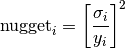</p>
</div><p>在 <code class="docutils literal"><span class="pre">nugget</span></code> 和 <code class="docutils literal"><span class="pre">corr</span></code> 设置合适的情况下，高斯过程可以鲁棒地从噪声数据中恢复出一个基本函数:</p>
<div class="figure align-center">
<a class="reference external image-reference" href="../auto_examples/gaussian_process/plot_gp_regression.html"></a>
</div>
<div class="topic">
<p class="topic-title first">其它样例</p>
<ul class="simple">
<li><a class="reference internal" href="../auto_examples/gaussian_process/plot_gp_probabilistic_classification_after_regression.html#example-gaussian-process-plot-gp-probabilistic-classification-after-regression-py"><span class="std std-ref">Gaussian Processes classification example: exploiting the probabilistic output</span></a></li>
</ul>
</div>
</div>
</div>
<div class="section" id="id3">
<h2>1.7.2. 数学 公式<a class="headerlink" href="#id3" title="Permalink to this headline">¶</a></h2>
<div class="section" id="id4">
<h3>1.7.2.1. 初始假设<a class="headerlink" href="#id4" title="Permalink to this headline">¶</a></h3>
<p>假设一个人要对一个计算机实验的输出建模，比如一个数学函数：</p>
<div class="math">
<p>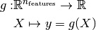</p>
</div><p>GPML 开始会假设这个函数是 高斯过程 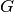 的一个条件样本轨道，而 G 另外被假定为下面这样：</p>
<div class="math">
<p>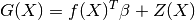</p>
</div><p>这里 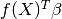 是一个线性回归模型，而 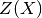 是一个零均值高斯过程带一个全静态协方差函数</p>
<div class="math">
<p>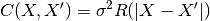</p>
</div><p> 是它的方差，而  是相关函数，只取决于每个样本之间的相对距离的绝对值。可能有点 featurewise (这就是静态假设)。</p>
<p>根据这个基本的公式，请注意，GPML 不过是基本最小二乘线性回归的一种扩展:</p>
<div class="math">
<p></p>
</div><p>除了额外假设的一些样本间由相关函数决定的空间相干性（相关性）之外，实际上，普通最小二乘会假设
相关模型 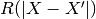 是这样一个模型: 当 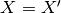 时为 0 ，不等时为 <em>dirac*(狄拉克)相关模型（ 有时候在克里金插值方法里被称作 *nugget</em> 相关模型 ）。</p>
</div>
<div class="section" id="blup-the-best-linear-unbiased-prediction">
<h3>1.7.2.2. 最佳线性无偏预测（BLUP，The best linear unbiased prediction）<a class="headerlink" href="#blup-the-best-linear-unbiased-prediction" title="Permalink to this headline">¶</a></h3>
<p>现在来推导样本轨道:math:<cite>g</cite> 在在观测条件下的*最佳线性无偏预测*:</p>
<div class="math">
<p>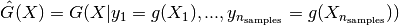</p>
</div><p>它是来源于它的*给定属性*:</p>
<ul class="simple">
<li>它是线性的 (观察值的一个线性组合)</li>
</ul>
<div class="math">
<p>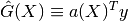</p>
</div><ul class="simple">
<li>它是无偏的</li>
</ul>
<div class="math">
<p>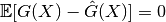</p>
</div><ul class="simple">
<li>是最佳地 (就均方误差来说)</li>
</ul>
<div class="math">
<p>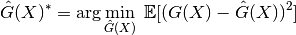</p>
</div><p>所以最优权重向量  就是如下约束优化问题等式的解:</p>
<div class="math">
<p>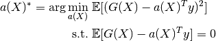</p>
</div><p>用拉格朗日方法重写这个约束优化问题，并进一步的看，要满足一阶最优条件，就会得到一个用来预测的解析形式的表达式－－完整的证明见参考文献。</p>
<p>最后，BLUP(最佳线性无偏预测)表现为一个的高斯随机变量，均值是:</p>
<div class="math">
<p>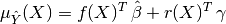</p>
</div><p>方差是:</p>
<div class="math">
<p>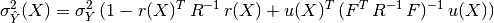</p>
</div><p>这里我们引入:</p>
<ul class="simple">
<li>相关矩阵，由自相关函数和内置的参数 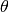 定义:</li>
</ul>
<div class="math">
<p>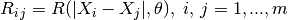</p>
</div><ul class="simple">
<li>待预测点和DOE(试验设计)的一系列点之间交叉相关向量:</li>
</ul>
<div class="math">
<p>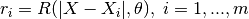</p>
</div><ul class="simple">
<li>回归矩阵(例如，当  是一个多项式，就是范得蒙矩阵(Vandermonde)):</li>
</ul>
<div class="math">
<p></p>
</div><ul class="simple">
<li>最小二乘法回归权重 :</li>
</ul>
<div class="math">
<p>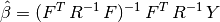</p>
</div><ul class="simple">
<li>和这些向量:</li>
</ul>
<div class="math">
<p>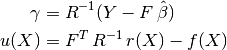</p>
</div><p>切记，高斯过程预测器的概率结果是完全解析的，并主要依赖于基本的线性代数操作。</p>
<p>更准确来说，预测的均值是两个简单线性组合的和(点积)，方差需要是两个矩阵的逆，但相关矩阵可以使用Cholesky分解算法来分解。</p>
</div>
<div class="section" id="eblup-the-empirical-best-linear-unbiased-predictor">
<h3>1.7.2.3. 经验最佳线性无偏预测(EBLUP,The empirical best linear unbiased predictor)<a class="headerlink" href="#eblup-the-empirical-best-linear-unbiased-predictor" title="Permalink to this headline">¶</a></h3>
<p>直到如今, 自相关模型和回归模型都是假设给定的。然而实际上，不能够提前知道是这些模型的，因此要为这些模型 <a class="reference internal" href="#correlation-models"><span class="std std-ref">相关性模型(Correlation Models)</span></a> 做（有动机的）经验选择。</p>
<p>假设已经选了一些模型，接下来应该估计那些在 BLUP 中仍然未知的参数。</p>
<p>这么做，需要用一系列提供的观察值加上一些推理技巧。</p>
<p>目前的实现是基于 DACE 的 Matlab 工具箱，使用了 <em>最大似然估计</em> 技术－－ 完整的方程参见参考文献中的 DACE 手册。在自相关参数上的最大似然估计问题变成了一个的全局最优化问题。</p>
<p>在目前的实现里，全局最优是通过 scipy.optimize 里的 fmin_cobyla 优化函数的均值得到解的（译者：COBYLA ：约束优化的线性逼近）。</p>
<p>但是在各向异性的情况下，提供了基于Welch&#8217;s componentwise 优化算法的实现，参见参考文献。</p>
<p>更多更全面的关于机器学习的高斯过程理论方面的知识，请参考如下的参考文献：</p>
<div class="topic">
<p class="topic-title first">References:</p>
<ul class="simple">
<li><a class="reference external" href="http://www2.imm.dtu.dk/~hbn/dace/">DACE, A Matlab Kriging Toolbox</a> S Lophaven, HB Nielsen, J
Sondergaard 2002</li>
<li><a class="reference external" href="http://www.jstor.org/pss/1269548">Screening, predicting, and computer experiments</a> WJ Welch, RJ Buck, J Sacks,
HP Wynn, TJ Mitchell, and MD Morris Technometrics 34(1) 15&#8211;25,
1992</li>
<li><a class="reference external" href="http://www.gaussianprocess.org/gpml/chapters/RW.pdf">Gaussian Processes for Machine Learning</a> CE
Rasmussen, CKI Williams MIT Press, 2006 (Ed. T Diettrich)</li>
<li><a class="reference external" href="http://www.stat.osu.edu/~comp_exp/book.html">The design and analysis of computer experiments</a> TJ Santner, BJ
Williams, W Notz Springer, 2003</li>
</ul>
</div>
</div>
</div>
<div class="section" id="correlation-models">
<span id="id5"></span><h2>1.7.3. 相关性模型(Correlation Models)<a class="headerlink" href="#correlation-models" title="Permalink to this headline">¶</a></h2>
<p>常见的相关性模型符合一些著名的 SVM 的核，因为它们大多是建立在在等效假设上的。
它们必须满足Mercer条件（参考 mercer定理），并且要额外保持稳定性(译者:此处stationary不知如何翻译)。但是切记，选择相关模型，应该切合由观察得到的原始试验的已知属性。
例如：</p>
<ul class="simple">
<li>如果原始实验已知是无穷可微的（光滑的）,那么应该使用 <em>平方指数相关模型*（*squared-exponential correlation model</em>）</li>
<li>如果不是，那么应该使用 <em>指数相关模型*（*exponential correlation model</em>）</li>
<li>也要注意，有种相关模型将可导性的度作为输入：就是Matern 相关模型，但是这里还有实现出来（TODO）</li>
</ul>
<p>更多关于选择相关模型的方法的讨论细节，参见参考中Rasmussen &amp; Williams的书。</p>
</div>
<div class="section" id="regression-models">
<span id="id6"></span><h2>1.7.4. 回归模型<a class="headerlink" href="#regression-models" title="Permalink to this headline">¶</a></h2>
<p>常见的线性回归模型涉及到 0阶（常数）、1阶、和二阶多项式函数。但是可以以 Python 函数的形式指定自己的多项式函数－－接收特征 X 作为输入并返回一个包含着函数集的值的向量。</p>
<p>唯一的约束是函数的数量必须不能超过观察信号的数量，所以底层的回归问题不是 <em>欠定</em> 的</p>
</div>
<div class="section" id="id7">
<h2>1.7.5. 实现细节<a class="headerlink" href="#id7" title="Permalink to this headline">¶</a></h2>
<p>目前的实现基于DACE Matlab 工具箱的一个翻译。</p>
<div class="topic">
<p class="topic-title first">References:</p>
<ul class="simple">
<li><a class="reference external" href="http://www2.imm.dtu.dk/~hbn/dace/">DACE, A Matlab Kriging Toolbox</a> S Lophaven, HB Nielsen, J
Sondergaard 2002,</li>
<li>W.J. Welch, R.J. Buck, J. Sacks, H.P. Wynn, T.J. Mitchell, and M.D.
Morris (1992). Screening, predicting, and computer experiments.
Technometrics, 34(1) 15&#8211;25.</li>
</ul>
</div>
</div>
</div>


          </div>
        </div>
      </div>
        <div class="clearer"></div>
      </div>
    </div>

    <div class="footer">
        &copy; 2010 - 2014, scikit-learn developers (BSD License).
      <a href="../_sources/modules/gaussian_process.txt" rel="nofollow">Show this page source</a>
    </div>
     <div class="rel">
    
    <div class="buttonPrevious">
      <a href="neighbors.html">Previous
      </a>
    </div>
    
     </div>

    
    <script type="text/javascript">
      var _gaq = _gaq || [];
      _gaq.push(['_setAccount', 'UA-22606712-2']);
      _gaq.push(['_trackPageview']);

      (function() {
        var ga = document.createElement('script'); ga.type = 'text/javascript'; ga.async = true;
        ga.src = ('https:' == document.location.protocol ? 'https://ssl' : 'http://www') + '.google-analytics.com/ga.js';
        var s = document.getElementsByTagName('script')[0]; s.parentNode.insertBefore(ga, s);
      })();
    </script>
    

    <script src="http://www.google.com/jsapi" type="text/javascript"></script>
    <script type="text/javascript"> google.load('search', '1',
        {language : 'en'}); google.setOnLoadCallback(function() {
            var customSearchControl = new
            google.search.CustomSearchControl('016639176250731907682:tjtqbvtvij0');
            customSearchControl.setResultSetSize(google.search.Search.FILTERED_CSE_RESULTSET);
            var options = new google.search.DrawOptions();
            options.setAutoComplete(true);
            customSearchControl.draw('cse', options); }, true);
    </script>
  </body>
</html>